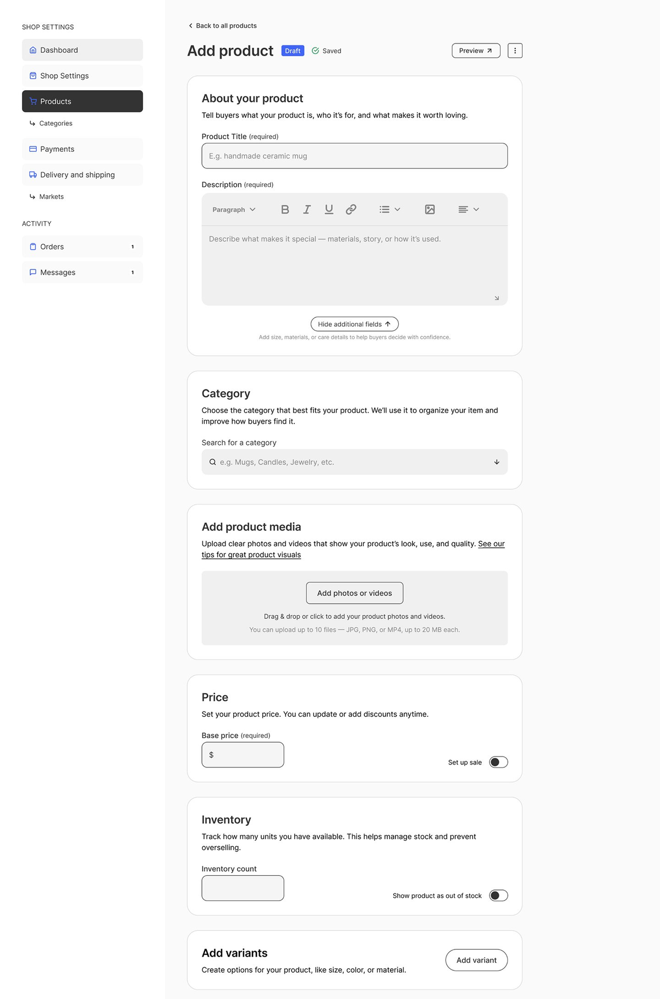
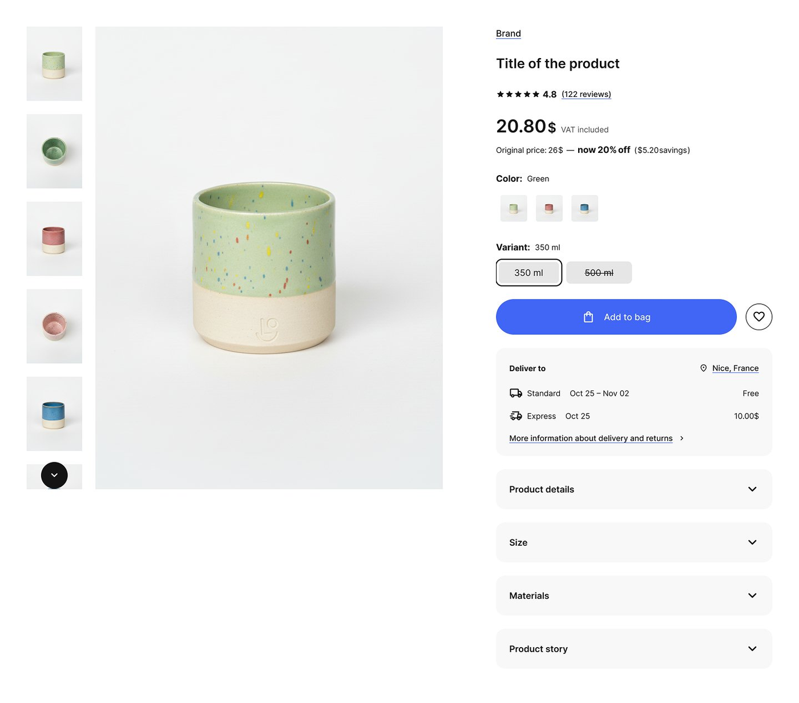
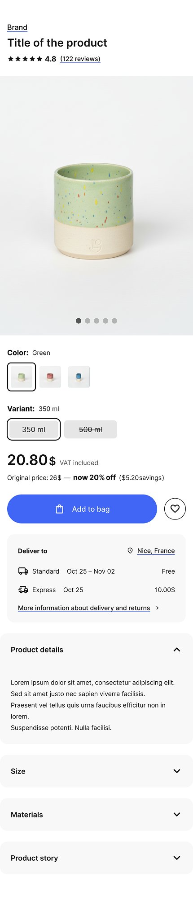

Roots is a marketplace that lets small sellers set up a professional shop — and manage their catalog — without technical skills or the heavy fees of the platforms they're stuck with today.
RoleLead Product Designer
ScopeSeller CMS + customer storefront, end-to-end
SurfacesResponsive web, light & dark
StatusDesign complete · in development
The problem
Every way to sell online has a catch.
Small sellers — especially in markets like Ukraine — are caught between options that each fail them in a different way. Social platforms are easy to start on but chaotic to run. Building your own site means technical work and SEO know-how. Established marketplaces charge steep fees and put up verification walls. None of them let a non-technical seller stand up a real, professional storefront quickly and affordably.
Research
Mapping how sellers actually sell.
I ran a competitive analysis across the four channels sellers use today — Instagram, their own website, Etsy, and Rozetka — tracing the full journey from setup to after-sale and pulling out the pain point at each stage. A clear pattern emerged: ease and structure are always traded off against each other, and fees or technical skill fill the gap.
Instagram
Easy to start and great reach, but no official shop, catalog, or cart. Inventory is manual, orders live in DMs, and there's no buyer protection or dispute system.
Own website
Full control, but choosing and running a CMS (WooCommerce, Shopify) demands technical setup, hosting costs, plugins, and SEO knowledge. Disputes handled manually.
Etsy
Built-in audience, but stacked fees (listing + transaction + processing), strict SEO competition, and mandatory verification walls that are slow for some sellers to clear.
Rozetka
Local reach, but bureaucratic onboarding, complex category mapping, high commissions, upfront balances, and little control over branding.
The opportunity
There's a clear gap for a straightforward, locally-tailored platform where sellers can quickly set up a professional storefront without technical overhead or heavy fees — combining the ease of social-media selling with the robustness of a real e-commerce platform.
How might we…
HMW 01
Let sellers add products without technical skills.
HMW 02
Help small sellers create structured product catalogs.
HMW 03
Reduce the time and cost of creating multiple listings.
HMW 04
Reduce the friction of uploading and editing multiple items.
The solution
Two halves that stay in sync.
Roots is built around two connected surfaces: a seller CMS for creating and managing products, and a customer storefront that renders that same product data into a polished shopping experience. The seller's inputs and the buyer's view are designed as one system, so what a seller fills in is exactly what a customer sees.
Part 1 · Seller CMS
Adding a product, without the dread.
The add-product flow guides sellers through one clear section at a time — what the product is, its category, media, price, inventory, and variants — with plain-language helper text at every step. Where the old tools assume expertise, this assumes none.

Seller CMS · Add product
Guidance
Plain-language sections
Every block explains what to enter and why, so non-technical sellers always know what's expected.
AI assist
Suggested category
Category is suggested from the title and description — editable anytime — so catalogs stay structured without manual taxonomy work.
Variants
Color, size & stock
Manage options like color and size with their own price, inventory, and sale settings — without duplicating listings.
Ideation also explored ways to scale this further — a spreadsheet-style batch-edit workspace, CSV import, autofill from a seller's past inputs, AI-assisted descriptions and image editing, instant preview, and auto-saving drafts — prioritized on an effort/impact matrix. A subscription model (rather than per-listing fees) was proposed to directly answer the cost pain point from research.
The detailed flows
The full add-product and catalog-management flows, mapped end to end.
The product page turns the seller's structured inputs into a clean, trustworthy buying experience — variants, pricing and savings, delivery estimates, reviews, and clear stock states — responsive across desktop and mobile.

Storefront · Product page (desktop)

Storefront · Product page (mobile)
Reflection
Designing the seller and the buyer as one system.
The hardest part wasn't either screen on its own — it was keeping the seller's CMS and the customer's storefront in lockstep, so a structured input on one side always produced a coherent result on the other. Designing both halves together is what lets a non-technical seller produce a storefront that looks like it took a team. The design is complete and the product is now in development.